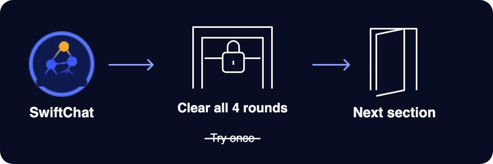

Practice Bot — Check Before You Use
You practise with SwiftChat, a practice bot. It shows you AI answers, asks what to check and tells you why at once.
Brief
This is how the practice bot works.
The bot follows three simple rules. They help you learn by doing.
Your task. Tap each card to see a rule.
Brief
Never type these details into an AI tool.
All examples in this bot are made up. Keep your answers made up too.
Your task. Sort each item into the right box.
Real life check
Why should you practise before the real thing?
A short practice now can stop a real mistake later. Here are three reasons.
Your task. Tap each card to see a reason.
Real life check
Why is this bot a gated step?
This bot is a mandatory, gated step. You must clear it, not just try it once.
Your task. Answer the question about the gate.
What must you do with this bot?

Before you begin
Meet SwiftChat, your practice bot.
SwiftChat gives you 4 short rounds. Each round has one example and one question.
Your task. Tap each round to see what you will do.
Before you begin
You get examples from a workshop or from a college campus.
Your task. Choose your setting, then tap Start chatting with SwiftChat.
Choose your setting first.
Practice Bot
Answer 4 short rounds with SwiftChat.
Tap the question mark for a hint. If you are wrong, you get a new example.
Your task. Read the bot's message, then tap your answer in the chat.
Finish all 4 rounds first. Then tap Next.
Skip this round?
Practice complete
Finish all 4 rounds first.
Your result appears here when you finish the chat.
Practice complete
Use this 4-step check every time.
Your task. Put the 4 steps in the right order.
- Spot the parts you need to check.
- Separate what a record supports from what it does not.
- Judge if a part is unsupported or definitely false.
- Act on it. Verify, replace, qualify or remove it.
Try it now. Before your next real AI task, use these 4 steps in your head.